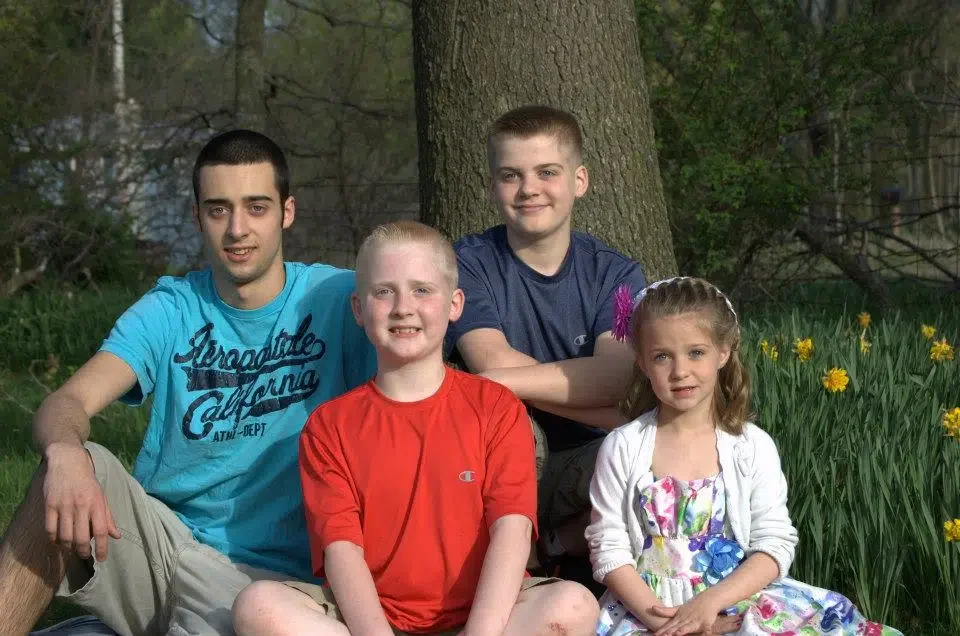

Meet Your Doula
Hi, I'm Tonya, Your Jackson, Michigan Doula
Certified Full Spectrum Doula · High-Risk Specialist · Perinatal Community Health Worker
Certified Full Spectrum Doula · High-Risk Specialist · Perinatal Community Health Worker
With more than 16 years of experience in the medical field and four years dedicated to Women's Health as a Perinatal Community Health Worker, I bring clinical knowledge alongside the kind of care that actually feels human.
I'm a mother to four living children and one angel baby. I carried twins. I brought home one. That experience shaped everything about how I show up for the families I serve, because I know exactly how fast families can feel left behind after hospital discharge.
What started as a deeply personal loss became my life's work. I've made it my mission to make sure no family in our community has to navigate the hardest moments alone.

"Every family carries its own story and inner wisdom, and my role is to walk beside you with grounded presence, clear guidance, and compassion through every season of your journey."
I work with a limited number of clients at a time, intentionally. Every family I take on receives my full attention, my full availability, and care that is tailored to their specific journey. Not a template. Not a checklist.
As a Certified Full Spectrum Doula, I specialize in high-risk pregnancy, postpartum recovery, and bereavement support. My care is trauma-informed and evidence-based at every step.
I'm based in Jackson, Michigan, and I serve Jackson and surrounding communities. Additional travel may be available by arrangement. You can explore my high-risk birth support, postpartum support, and bereavement and loss support, or see packages and pricing.
When I'm not supporting families, you'll find me kayaking Michigan trails, following the NFL, or practicing the kind of stillness I try to bring into every birth room. Autumn and spring are my seasons. Nature is my reset.
Book a free consultation, no pressure, no obligation.
Schedule a Free Consultation